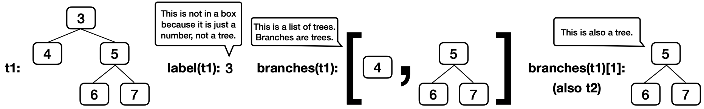

讨论课 4：序列、树
列表
append。今天不要用这些。你只需要用到列表字面量（例如 [1, 2, 3]）、元素选择（例如 s[0]）、列表加法（例如 [1] + [2, 3]）、len（例如 len(s)）和切片（例如 s[1:]）。就用这些！这周晚些时候我们会介绍其他列表操作，到时有很多时间。
关于列表，最重要的一点是：非空列表 s 可以拆分成它的第一个元素 s[0] 和列表的其余部分 s[1:]。
>>> s = [2, 3, 6, 4]
>>> s[0]
2
>>> s[1:]
[3, 6, 4]它有两种形式：
[<expression> for <element> in <sequence>]
[<expression> for <element> in <sequence> if <conditional>]下面这个例子从 [1, 2, 3, 4] 开始，用 if i % 2 == 0 挑出偶数元素 2 和 4，再用 i*i 分别把它们平方。for i 的作用是给 [1, 2, 3, 4] 中的每个元素起一个名字。
>>> [i*i for i in [1, 2, 3, 4] if i % 2 == 0]
[4, 16]这个列表推导式求值后得到的是一个列表，其中包含：
i*i的值- 对应序列
[1, 2, 3, 4]中的每个元素i - 且满足
i % 2 == 0
换句话说，这个列表推导式会创建一个新列表，其中包含原列表 [1, 2, 3, 4] 中每个偶数元素的平方。
我们也可以把列表推导式改写成等价的 for 语句，例如上面的例子可以改写成：
>>> result = []
>>> for i in [1, 2, 3, 4]:
... if i % 2 == 0:
... result = result + [i*i]
>>> result
[4, 16]Q1：偶数加权
写一个函数，接受一个列表 s，返回一个新列表：只保留 s 中下标为偶数的元素，并把它们乘以各自对应的下标。请先用普通的 for 循环解决这个问题（不要用列表推导式）。
既然你已经用 for 循环做过了，现在试试用列表推导式！
字典
字典是 Python 的一种数据结构，它把键映射到值。对于字典 d：
- 每个键恰好映射到一个值，可以用
d[<key>]访问。 - 如果你尝试
d[<key>]，但<key>不是d中有效的键，就会报错。 - 你可以用
<key> in d来测试（返回True或False）某个键是否在d中。 d.get(<key>, <default>)会返回d中<key>映射到的值；如果<key>不是d中的键，就返回<default>。- 可以分别用
d.keys()、d.values()或d.items()来访问键、值或键值对的序列。 - 键可以是任意不可变类型（例如字符串、数字和元组），但不能是可变类型（例如列表）。
- 你可以在
for循环中使用d（例如for k in d），这样会遍历d中的键。
Q2：快乐互赠者
在某个讨论班里，一些人在节日期间互赠礼物。如果两个人互相赠送礼物，我们就称他们为「快乐互赠者」。实现函数 happy_givers，它接受一个 gifts 字典，该字典把人映射到他送礼物的人。happy_givers 输出该班所有快乐互赠者的列表，列表顺序无关紧要。
注意，如果某人收到了礼物但没有送出礼物，他不会作为键出现在 gifts 字典中。（他只作为值出现。）你可以假设没有人给自己送礼物。
找到解法之后，作为挑战，试着用列表推导式在一行内实现一个解法。
选做：设想另一种情况：字典中每个人都是键，其值是他送过礼物的所有人的列表。试着针对这种结构实现一个解法，找出所有快乐互赠者的列表。
树
对于树 t：
- 它的根标签可以是任意值，
label(t)会返回它。 - 它的分支也是树，
branches(t)会返回一个由分支组成的列表。 - 用
tree(label(t), branches(t))可以构造出一棵完全相同的树。 - 你可以调用以树为参数的函数，例如
is_leaf(t)。 - 这就是操作树的方式。不要使用
t == x、t[0]、x in t或list(t)等写法。 - 没有办法在不破坏抽象屏障的前提下修改一棵树。
下面是一棵示例树 t1，它的分支 branches(t1)[1] 就是 t2。
t2 = tree(5, [tree(6), tree(7)])
t1 = tree(3, [tree(4), t2])
路径是一系列树，其中每一棵都是下一棵的父节点。
def tree(label, branches=[]):
for branch in branches:
assert is_tree(branch), 'branches must be trees'
return [label] + list(branches)
def label(tree):
return tree[0]
def branches(tree):
return tree[1:]
def is_leaf(tree):
return not branches(tree)
def is_tree(tree):
if type(tree) != list or len(tree) < 1:
return False
for branch in branches(tree):
if not is_tree(branch):
return False
return TrueQ3：热身
result 绑定到什么值？
result = label(min(branches(max([t1, t2], key=label)), key=label))多么绕啊！
下面快速复习一下 key 函数在 max 和 min 中是如何工作的，
max(s, key=f) 返回 s 中使得 f(x) 最大的元素 x。
>>> s = [-3, -5, -4, -1, -2]
>>> max(s)
-1
>>> max(s, key=abs)
-5
>>> max([abs(x) for x in s])
5因此，max([t1, t2], key=label) 返回 label 最大的那棵树，在这里是 t2。
如果你在想的话：这个表达式并没有违反抽象屏障。[t1, t2] 和 branches(t) 都是列表（不是树），所以对它们调用 min 和 max 是没问题的。
Q4：是否存在路径
实现 has_path，它接受一棵树 t 和一个列表 p，返回从 t 的根出发是否存在标签序列为 p 的路径。例如，t1 有一条从根出发、标签为 [3, 5, 6] 的路径，但没有 [3, 4, 6] 或 [5, 6]。
重要：在动手实现这个函数之前，请先讨论课上关于树处理函数的递归调用的这些问题：
- 我可以先做哪个小的选择（比如探索哪个分支）？
- 对于每个选项，我应该进行什么样的递归调用？
我该如何合并这些递归调用的结果？
- 它们返回什么类型的值？
- 这些返回值是什么意思？
Q5：寻找路径
实现 find_path，它接受一棵标签各不相同的树 t 和一个值 x，返回一个列表，其中包含从 t 的根到标签为 x 的节点这条路径上各节点的标签。
如果 x 不是 t 中的标签，返回 None。假定 t 的标签互不相同。
Q6：修剪叶子
实现 prune_leaves，它接受一棵树 t 和一个值的元组 vals，返回 t 的一个版本，其中所有标签在 vals 中的叶子都被删除。不要删除非叶节点，也不要删除不匹配 vals 中任何项的叶子。如果修剪后树中不再有任何节点，返回 None。
 列表
列表